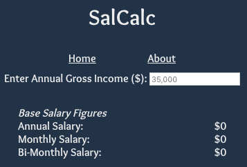
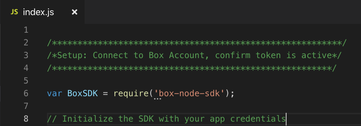

Hey! My name is Nelson and I work as a Technology Business Consultant in New York City. I currently live in the historic Lower East Side.
I am a pasisonate problem-solver and challenge-seeker. I constantly find myself losing track of time when writing and designing apps, or solving critical software issues on the job. My strongest skills include resourcefullness and quick-learning. Topics I’m currently interested in: data privacy, progressive web apps, crypto mining, API integrations.
When I’m not coding, I’m either busy at work, exercising, or eating chicken fingers. I love listening to music, especially house and rap music. On the weekends, I hang out with friends, travel, and watch or play sports. A couple of my long term goals include learning French and the piano. In five years from now, I envision myself solving high-level & complex technology issues while also contributing significantly at a company or for a product I am enthusiastic about.
Salcalc - A no nonsense app that simply calculates your base salary, your salary after paying Federal and Fica taxes, and your potential bonus. Most recent update features dark mode using Context in React.

List of Technologies Used: HTML, Javascript, React, CSS
- Live Link -
Repo
Treasury Team Automation - I developed a short project using Node to solve a simple business problem I have learned about at treasury departments within hundreds of commercial banks worldwide. Bankers currently manually write in treasury rates into spreadsheets to prepare them for analsyis in backend balance sheet simulation software. My solution combines the Quandl API, Box API, and Box Automation to automatically write the newest treasury rate to a file and move it to another folder, ready for any ETL process. This is for demonstration purposes only.

List of Technologies Used: OAuth 2.0, Javascript, Node, Box API, Quandl API, Box Automation -
Repo
GoT: S8 Warm-Up Quiz - Think you know Game of Thrones? Try your hand at one of the most difficult thrones trivia on the internet. There are four grades you can receive based off your score. Play until you get the perfect grade! Good luck!

List of Technologies Used: HTML, Javascript, JQuery, CSS
- Live Link -
Repo